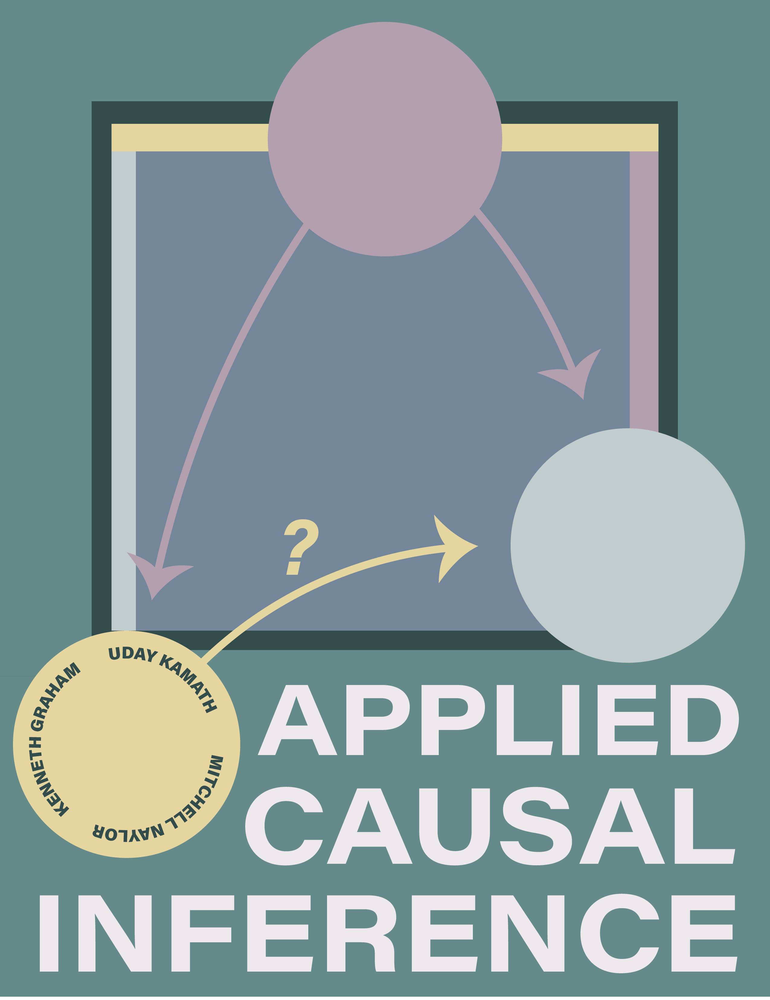

Applied Causal Inference
This is a book which covers applications of causality, ranging from a practical overview of causal inference to cutting-edge applications of causality in machine learning domains.
Preface

Welcome to the Applied Causal Inference book! We are excited you’re here.
We intend to offer the web version of this book entirely free of charge. However, there are other ways to purchase other versions of the book or otherwise support the authors:
- E-book versions are available on LeanPub
- Additionally, if you found the web version helpful and would like to support the authors, you can use the LeanPub price slider to do so
- Hard copies are available on Amazon (add link)
Who This Book is For
This book is designed to help anyone along the spectrum of experience with causal inference – nearly everyone from absolute beginners to experienced users of causality will be able to learn something about the world of causal inference and how it can be applied. If you use data to answer questions, then it’s likely that you can benefit from the techniques described in this book. Whether you’re in industry or academia, the causal inference toolkit will be valuable to have in your repertoire.
We wrote this book to make it easy to leverage these tools within the standard data science workflow. We assume no prior exposure to causal methods, but there are a couple of small prerequisites to help you get the most out of this book:
- Understanding of standard statistical and machine learning methods: correlation, linear regression, generalized linear models, tree-based models
- Familiarity with Python for case studies, illustrations, and implementations; experience using the standard PyData stack (Pandas, NumPy) will be useful
This book builds from these basic foundations to provide a practical understanding of how causal inference works and how to use it in applied settings.
Why This Book?
Recent advancements in causal inference have made it possible to gain profound insight about our world and the complex systems which operate in it. While industry professionals and academics in every domain ask questions of their data, traditional statistical methods often fall short of providing conclusive answers. This is where causality can help.
If you’re here, it’s likely that you are interested in learning about causal inference. You may have read some of the existing literature on causal inference and found it difficult to apply to the problems you face at work or in the lab. We’ve been there, and we wrote this book to serve as a resource bridging the gap between the theory and application of causal techniques. We are not aware of another book which goes from the foundations of causality to hands-on examples using common data science tooling. Specifically, this book contains:
- A comprehensive resource that builds up from elementary principles of causality to the more advanced techniques in causal inference
- An in-depth guide and explanation of causal estimation procedures and methods, coupled with an explanation of the process of causal discovery, illustrating how to discern the underlying causal structure from observational data
- An overview of how causal inference can be applied in various domains such as natural language processing, computer vision, and time series analysis
- A compendium filled with successful causal models, along with their fundamental mathematical theory, explained in a manner that’s easy to comprehend
- A focus on important areas like fairness, explainability, and reinforcement learning within the scope of causality
- A practical approach that employs Python libraries like DoWhy and CausalML, demonstrating their use in real-world applications; the Python code is made available in Google Colab notebooks
We designed this book to be a resource for any researcher, analyst, or data scientist to go from basic understanding of causal inference to hands-on, applied usage. Simply put, we wrote this book because we wished a similar resource existed when we first began learning about causal inference. Causality is an exciting domain, and we hope you find this book helpful in your journey to incorporate causal tools into your day-to-day work.
What This Book Contains
This book is divided into chapters which build upon each other within 3 broad parts. The content of the chapters include necessary theoretical foundations, details for application and, where possible, practical case studies to illustrate the end-to-end process. We recommend readers begin with Part 1, which is the ground-up introduction to applied causal inference. Parts 2 and 3 build upon the information introduced in Part 1, and can be explored according to the reader’s preference.
Throughout the book, we use a green callout like the one below to denote, rephrase, or generally call attention to particularly important concepts.
Blocks like this one highlight especially helpful or foundational concepts referenced throughout the book and in causal inference literature more broadly!
Contents by Chapter
Part 1 begins by motivating why causality is a promising resource and laying the foundation of the necessary concepts from causal inference, culminating in an understanding of the potential outcomes framework. After this, we explore the full causal estimation process, providing the tools necessary to go from an initial question and a dataset to the creation and evaluation of causal estimates. We then provide an overview of causal discovery, which allows us to learn causal structures from observational data. The contents of Part 1 are as follows:
Chapter 1 first seeks to motivate the reader by answering the question “why should I use causality?” It does this by providing illustrative examples of Simpson’s paradox and spurious correlation, and introducing how causal methods address these problems. The chapter then describes the paradigm shift between the traditional statistical or machine learning workflow to that of a causal inference setting. The chapter closes by giving a brief history of causal inference – from Judea Pearl’s early work to modern applications in industry – and providing a list of existing resources for those wishing to learn more.
Chapter 2 introduces the potential outcome framework to explain concepts and theoretical foundations of causal effects. By exploring the key ideas and theories, this chapter aims to deepen readers’ understanding of cause-and-effect relationships. A comprehensive case study is presented, utilizing a well-known causal study conducted with an educational television program. This practical example aims to give readers a firsthand understanding of the discussed concepts. The chapter concludes by addressing various challenges from the Gelman and Hill book, enabling readers to develop the necessary skills to contemplate, model, and apply the theory discussed throughout the chapter.
Chapter 3 delves further into the world of causal modeling, building upon the foundational knowledge established with the potential outcome framework and fundamental causal concepts. This chapter explores causal graphs as a practical approach for inferring causal relationships. We introduce causal graphs, discuss the high-level process of causal inference, examine various methods and techniques, and present a comprehensive case study with the Lalonde dataset for comparative analysis.
Chapter 4 probes into the challenges of constructing causal models in practice and highlights the emergence of causal discovery techniques based on observational data as an alternative. It introduces a range of techniques developed for this purpose and presents an array of causal discovery algorithms, explaining their relative strengths and limitations. The chapter concludes with a real-world case study, showcasing the practical utility of these algorithms in uncovering causal relationships.
We shift gears in Part 2 to discuss how causal inference is currently being used within other sub-domains of machine learning, including computer vision, natural language processing, and in time-dependent settings. These are the chapters in Part 2:
- Chapter 5 focuses on how to apply methods of causal inference natural language processing, specifically for data that includes text. We consider how to compute causal effect sizes when the treatment and/or outcome is text, with or without the presence of confounding text. We include a case study analyzing film revenue data.
- Chapter 6 details the intersection of causality and computer vision. It introduces the ever-present issues of spurious correlation and confounding in image data – problems well-suited for applications of causal methods. The chapter showcases research efforts to apply causal inference techniques in specific areas of computer vision, including image classification and visual question-answering. The chapter concludes with a case study of causal methods designed to improve robustness, using an adversarial transfer dataset.
- Chapter 7 explores a recent method for time-dependent causal inference that is able to not only determine causation, but the temporal delay between the cause and effect variables. At present, this chapter does not describe time-dependent causal inference in the presence of confounding associations. We include a case study using an open-source bike sharing dataset.
In Part 3, we discuss some advanced topics within the field of causality:
- Chapter 8 explores a special case of causal inference: assessing model fairness. The chapter provides a high-level introduction to the issues of algorithmic bias, describes existing non-causal approaches of measuring unfair bias, and presents an argument in favor of using causal model fairness techniques. It details causal approaches and additional considerations for the confounders that may exist in fairness settings. The chapter closes with a case study comparing causal and non-causal methods on the infamous COMPAS dataset.
- Chapter 9 contains an overview of cutting-edge applications of causality in reinforcement learning, including techniques to improve world models in model-based RL, merge online and offline data, improve sample efficiency, and explain agent incentives. This chapter closes with a discussion of the challenges preventing large-scale adoption of causal RL technique.
Reviews
This is a fabulous book that lucidly explains how we can deal with digital data and draw causal inferences in any domain. A rare find, combining theory with hands-on applications for beginners and experienced practitioners.
– Raj Pai, Senior Research Fellow, Aerospace
This comprehensive book unlocks the potential of causal machine learning, providing a roadmap to comprehend and implement causal inference techniques. Data scientists and researchers seeking to construct models that transcend mere correlations will find this book an invaluable resource.
– John Chih Liu, PhD., Researcher and Founder, Intelluron
I’m very impressed with this treatment of causal machine learning. Causality is a complex and broad subject, but the authors handle the topic elegantly. The book is clear and easy to follow without sacrificing completeness or depth. This is a great place to start for beginners, with plenty for the more experienced. Highly recommended!
– Joseph Porter, PhD., Research Engineer and Machine Learning Lead, Falkonry, Inc.
Acknowledgments
The authors especially want to thank Grant Burroughs for producing the cover design. Additionally, the authors extend their heartfelt appreciation to the reviewers (in alphabetical order): Zack Burch, Krishna Choppella, Dr. John Liu, Dr. Joe Porter, Dr. Sangeeta Shukla, and Vedant Vajre. Their valuable feedback and insightful suggestions have played an instrumental role in enhancing the quality of this work.
I would like to express my heartfelt gratitude to my wife, Pratibha, our nanny, Evelyn, our children, Brandy and Aaroh, as well as our friends and family, for their unwavering support and encouragement throughout this endeavor.
– Uday Kamath
I would like to express my deepest gratitude to my wife, Alyson, for her understanding and patient support throughout the entire process of writing this book. I also want to thank my friends and family for their enthusiastic support. Lastly, I want to thank my colleagues and co-authors for valuable discussions and inspiration.
– Kenneth Graham
I am incredibly grateful to all of my family, friends, and colleagues for their gracious support during this process. I especially want to thank my wife, Abby, for her constant encouragement and love – this would not have been possible without you.
– Mitchell Naylor